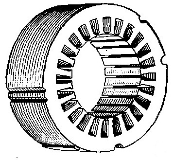

Асинхронные серводвигатели (сервомоторы) и другое оборудование. Сердечник и обмотка ротора.
Листы ротора асинхронных двигателей штампуются из высечки листов статора. Листы ротора покрываются изолирующей оксидной плёнкой при помощи термообработки штампованных листов для двигателей с высотой расположения оси вала до 250 миллиметров включительно и собранного сердечника для остальных двигателей с высотой расположения оси вала выше 250 миллиметров.
Для электрических машин с высотой расположения вала более 160 миллиметров сердечник выполняется из отштампованных листов на центральную отправку со специальным знаком, выполняется прессовка, давление сохраняется и происходит закрепление на оправке. Далее сердечник передается для заливки алюминием. Для двигателей с высотой расположения вала от 132 миллиметров сердечник изготавливается при помощи полуавтоматической сварки внутренним швом. После чего происходит заливка алюминием, специализированные оправки в данном случае не используются. Для двигателей с высотой расположения вала менее 250мм сердечники роторов электрооборудования после заливки насаживают на вал, в этом случае без шпонки. При высоте расположения вала более 250 мм происходит насаживание на вал со шпонкой.
Для короткозамкнутых роторов асинхронных двигателей с высотой расположения вала от 400мм используют сварную алюминиевую клетку. Перед покрытием изолирующим лаком с листов роторов следует снять заусенцы. Далее листы методом набора нацепляют на вал. Сердечник собран и помещается между нажимных шайб, выполняется прессовка и закрепление с одной стороны кольцевой шпонкой и упорным заплечиком с другой.
Если в роторе есть радиальные вентиляционные каналы, то они располагаются напротив аналогичных каналов сердечника статора. Следует обеспечить максимально надёжное крепления распорок ротора, чтобы при вращении ротора они не вылетели из креплений. Готовый сердечник ротора вместе с валом подвергается протачиванию по наружному диаметру, что обеспечивает нужный зазор между сердечниками ротора и статора.
Для синхронных двигателей, в частном случае серводвигателей, с высотой расположения вала менее 315мм сердечник ротора собирается на валу, сборка осуществляется из штампованных листов. Листы имеют форму, напоминающую звезду с разными полюсами. Чередование низких и высоких пакетов образует сердечник. Получается гребенчатая конструкция, позволяющая получить форму кривой поля, достаточно схожую с синусоидальной с условием равномерного зазора под полюсами.